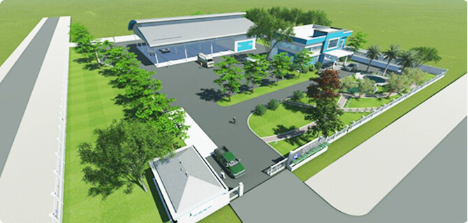

HỢP TÁC MỌI MẶT VỚI CHĂN NUÔI BÒ SỮA NÔNG HỘ
Song song với hệ thống trang trại hiện đại, Khối PTVNL duy trì ký kết hợp đồng bao tiêu sản phẩm STNL cho hàng ngàn đơn vị/hộ chăn nuôi
ả nước, tạo nên một cầu nối phát triển bền vững, hài hòa với mục tiêu nâng cao năng suất, chất lượng, giảm giá thành và tăng khả năng cạnh
tranh với sữa nhập khẩu.
Hệ thống các trạm sữa là mắt xích không thể thiếu trong mối liên kết này. Năm 2016, Khối PTVNL đã hoàn thành chương trình nâng cấp,
hiện
đại hóa các trạm thu mua sữa, tuân thủ các yêu cầu nghiêm ngặt về vệ sinh, an toàn thực phẩm. Hiện Khối PTVNL quản lý hơn 90 trạm thu
mua sữa trên phạm vi cả nước, ngoài hoạt động chính là thu mua sữa, các trạm thu mua sữa còn thực hiện nhiệm vụ phân phối thức ăn
chăn nuôi (TĂCN) bò sữa, tư vấn và chuyển giao công nghệ trong chăn nuôi và kiểm soát dịch bệnh cho bò sữa ... Đây thực sự đã trở thành các
đầu mối và địa chỉ tin cậy cho sự phát triển bò sữa trong dân.
Tất cả nguồn sữa tươi ở khu vực này sẽ được tập trung về đây, sau khi được kiểm soát chất lượng sẽ được điều phối cho tất cả
các Nhà máy tại khu vực Tp.Hồ Chí Minh và Bình Dương. Trung tâm được trang bị máy móc thiết bị hiện đại bao gồm kho lạnh để chứa mẫu
tập trung;

Trung tâm STNL Củ Chi
Dự kiến đi vào hoạt động Quý II năm 2017
Bên cạnh việc cam kết đầu ra cho đơn vị/hộ chăn nuôi có ký hợp đồng mua bán sữa, Khối PTVNL còn cử cán bộ kỹ thuật về chăn nuôi, thú y,
dinh dưỡng, kỹ thuật… trực tiếp làm việc với người nông dân, tư vấn và chuyển giao tiến bộ khoa học trong chăn nuôi bò sữa để người dân
chăn nuôi ngày một hiệu quả.
Chương trình thực sự đã và đang giúp bà con nông dân giảm
được giá thành sản xuất, yên tâm, gắn bó và mở rộng quy mô chăn nuôi bò sữa.
Tiếp nối thành công của chương trình kiểm soát chất lượng và giá TĂCN cho bà con, Khối PTVNL đang tiếp tục triển khai chương trình giúp
kiểm soát tế bào Soma và bệnh viêm vú cho đàn bò trong dân, bước đầu đã nhận được sự quan tâm và hưởng ứng rất tích cực từ các đơn vị/hộ
chăn nuôi. Các sản phẩm này được nhập khẩu trực tiếp từ NewZealand và đã được kiểm chứng tại các Trang trại của Công ty BSVN là mang lại
hiệu quả rất tốt.